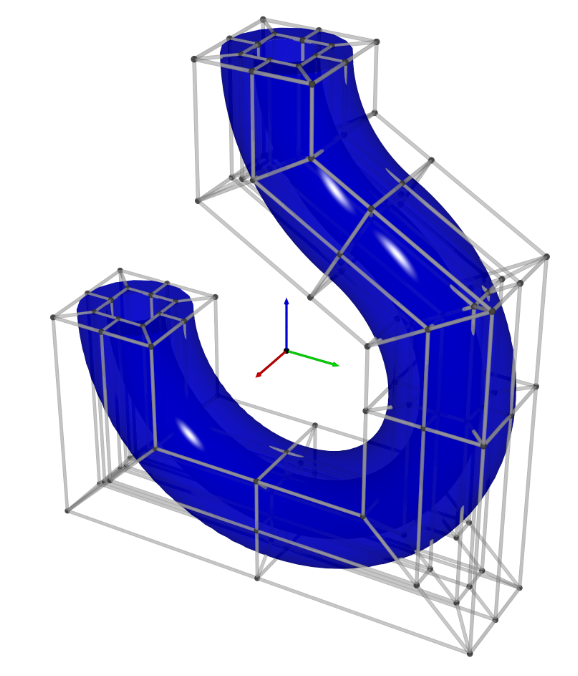

PDF documents
Weaving paper strips for designing of general curved surface with geometrical elasticity (English)

(2022/11/11)
My first paper on arXiv! This paper provides my theory about creating smooth surface by weaving paper strips.
Numerical Intagration Methods Flowchart (Japanese)

(2021/01/01)
数値積分の入門のためにフローチャートを作成しました. Gauss求積の学習のお伴にどうぞ.
$n-1$dimensional sphere passing through $n+1$ points (Japanese)

(2019/12/15)
$n+1$個の点$\bm{p}_i$が$\mathbb{R}^m (n≤m)$上の一般の位置にあるとき, $\bm{p}_i$を通る$n-1$次元球面$S⊂ℝ^m$が一意的に存在します. その球面$S$の中心$\bm{c}$を求める式を導出しました. これは3角形の外心の一般化でもあります.
Equivalent definitions of divergence on Riemannian manifolds (Japanese)
(2019/03/01)
多様体にRiemann計量を入れるとベクトル場の発散が定義できますが, その流儀は色々あります. この文章ではそれらの同値性やそれぞれの利点や幾何的解釈について述べます.
Shape representation with NURBS-manifold (Japanese)

(2018/12/12)
NURBSは区分有理式を用いて曲線や曲面を表現するための手法です. この手法はB-splineやBézier曲線の一般化であり, CGや数値計算などの分野で使われています. 日本語の文章で数学的にちゃんとした文章が見当たらなかったので書きました. (実は一部の証明などに間違いがありますが、修正に手が回ってません…)
Finding power series without calculus (Japanese)

(2016/02/27)
100 Great Problems of Elementary Mathematicsの内容をもとに書いた文章です. 微分や積分を使わずに$\exp(x)$, $\sin(x)$, $\cos(x)$の冪級数展開を求めます.
Sum of square numbers

(2013/03/24)
平方数の和の公式を視覚的に求めます.
平面上の2円の交点の座標について (Japanese)

(2012/08/11)
解析幾何で2つの円の交点を求めます.